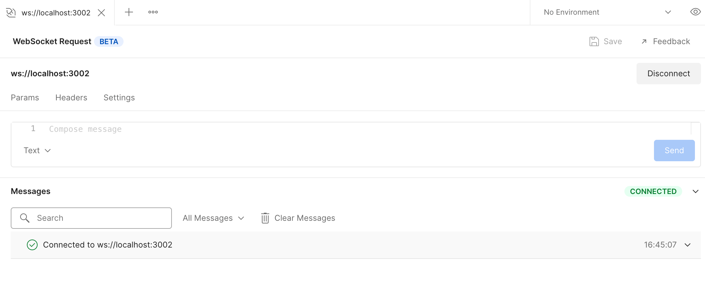
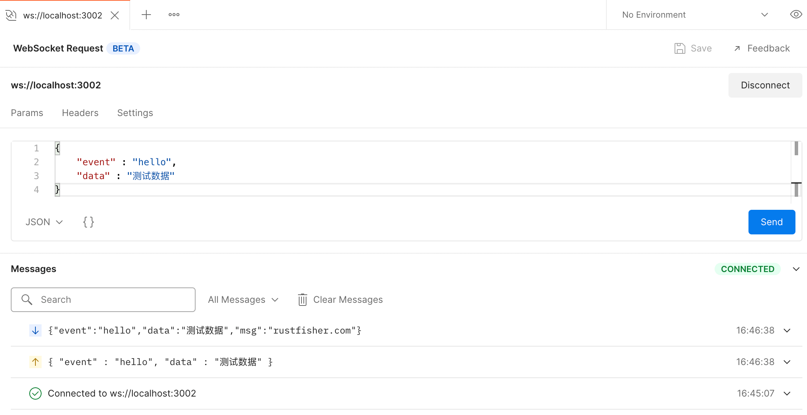
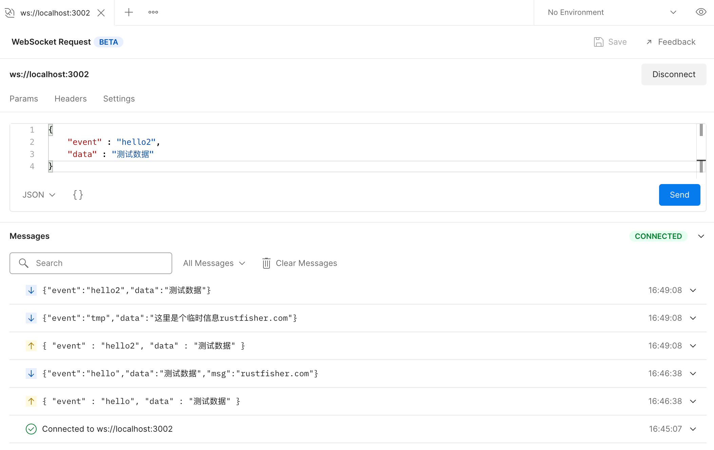

NestJS WebSocket 开始使用
使用NestJs提供WebSocket服务。
本文会在新建项目的基础上增加2个类
- Gateway 实现业务逻辑的地方
- WebSocketAdapter WebSocket适配器
新建项目
新建一个项目来演示，用npm来管理项目。1
nest new websocket-start
得到一个有基础功能的工程。
进入项目目录，安装2个库1
npm i --save @nestjs/websockets @nestjs/platform-socket.io
启动
使用端口30011
await app.listen(3001);npm run start启动我们的工程。用postman测一下，功能ok。
gateway介绍
Nest里的gateway(网关)只是一个用 @WebSocketGateway() 装饰器注释的类。从技术上讲，网关与平台无关，在创建适配器后它们与任何 WebSockets 库都兼容。
新建Gateway
新建ws.gateway.ts文件。在装饰器@WebSocketGateway()里端口指定为3002。1
2
3
4
5
6
7
8
9
10
11
12
13
14
15import { ConnectedSocket, MessageBody, SubscribeMessage, WebSocketGateway } from "@nestjs/websockets";
import * as WebSocket from 'ws';
@WebSocketGateway(3002)
export class WsStartGateway {
@SubscribeMessage('hello')
hello(@MessageBody() data: any): any {
return {
"event": "hello",
"data": data,
"msg": 'rustfisher.com'
};
}
}
里面有一个hello方法，订阅的消息是'hello'。
把它放进AppModule的providers里。1
providers: [WsStartGateway],
如果websockt和http用了同一个接口(本例是3001)，启动时会报错1
Error: listen EADDRINUSE: address already in use :::3001
因此我们这里给ws分配另一个端口号。
获取WebSocket对象
在WsStartGateway里新增加一个消息订阅方法。
方法里接受@ConnectedSocket() client: WebSocket，这个client就是与客户端的连接对象。
我们可以用它来给客户端发送消息。1
2
3
4
5
6@SubscribeMessage('hello2')
hello2(@MessageBody() data: any, @ConnectedSocket() client: WebSocket): any {
console.log('收到消息 client:', client);
client.send(JSON.stringify({ event: 'tmp', data: '这里是个临时信息' }));
return { event: 'hello2', data: data };
}
自定义WebSocketAdapter
前面我们建立好了Gateway，还需要一个适配器。
新建文件ws.adapter.ts，继承WebSocketAdapter1
2
3
4
5
6
7
8
9
10
11
12
13
14
15
16
17
18
19
20
21
22
23
24
25
26
27
28
29
30
31
32
33
34
35
36
37
38
39
40
41
42
43
44
45
46
47
48
49
50
51
52
53
54
55
56
57
58
59
60
61
62import * as WebSocket from 'ws';
import { WebSocketAdapter, INestApplicationContext } from '@nestjs/common';
import { MessageMappingProperties } from '@nestjs/websockets';
import { Observable, fromEvent, EMPTY } from 'rxjs';
import { mergeMap, filter } from 'rxjs/operators';
export class WsAdapter implements WebSocketAdapter {
constructor(private app: INestApplicationContext) { }
create(port: number, options: any = {}): any {
console.log('ws create')
return new WebSocket.Server({ port, ...options });
}
bindClientConnect(server, callback: Function) {
console.log('ws bindClientConnect, server:\n', server);
server.on('connection', callback);
}
bindMessageHandlers(
client: WebSocket,
handlers: MessageMappingProperties[],
process: (data: any) => Observable<any>,
) {
console.log('[waAdapter]有新的连接进来')
fromEvent(client, 'message')
.pipe(
mergeMap(data => this.bindMessageHandler(client, data, handlers, process)),
filter(result => result),
)
.subscribe(response => client.send(JSON.stringify(response)));
}
bindMessageHandler(
client: WebSocket,
buffer,
handlers: MessageMappingProperties[],
process: (data: any) => Observable<any>,
): Observable<any> {
let message = null;
try {
message = JSON.parse(buffer.data);
} catch (error) {
console.log('ws解析json出错', error);
return EMPTY;
}
const messageHandler = handlers.find(
handler => handler.message === message.event,
);
if (!messageHandler) {
return EMPTY;
}
return process(messageHandler.callback(message.data));
}
close(server) {
console.log('ws server close');
server.close();
}
}
在bindMessageHandler方法中，会将传来的json消息解析，然后发送到对应的处理器中。
这里就是发给gateway进行处理。
判断依据是message.event，就是event字段。
在main.ts里使用这个适配器。1
2
3
4
5
6
7
8
9
10import { NestFactory } from '@nestjs/core';
import { AppModule } from './app.module';
import { WsAdapter } from './ws/ws.adapter';
async function bootstrap() {
const app = await NestFactory.create(AppModule);
app.useWebSocketAdapter(new WsAdapter(app)); // 使用我们的适配器
await app.listen(3001);
}
bootstrap();
npm run start运行项目，准备进一步测试。
用Postman来测试WebSocket
Postman8.8.0提供了beta版的WebSocket测试功能。New -> WebSocket Request beta新建一个WebSocket测试。当前版本还不支持保存ws的测试例子。
输入目标url ws://localhost:3002，点击连接 Connect 按钮。

发送测试消息。在消息框里填入以下json数据。1
2
3
4{
"event" : "hello",
"data" : "测试数据"
}

发送的数据经过WsAdapter分发给WsStartGateway，处理后返回数据。
发送hello2测试数据1
2
3
4{
"event" : "hello2",
"data" : "测试数据"
}

可以看到服务返回了2条数据。
发送一个错误格式的数据1
2{
"event" : "hello2
服务端接收到了数据，但是解析失败1
ws解析json出错 SyntaxError: Unexpected end of JSON input
小结
要使用WebSocket功能，需要增加
- Gateway 实现业务逻辑的地方
- WebSocketAdapter WebSocket适配器
ws的端口建议是和http的端口分开。
参考
- NestJS WebSockets https://docs.nestjs.com/websockets/gateways
- NestJS 合集 https://rustfisher.com/categories/NestJS/
- 示例工程 https://gitee.com/rustfisher/nest-sample